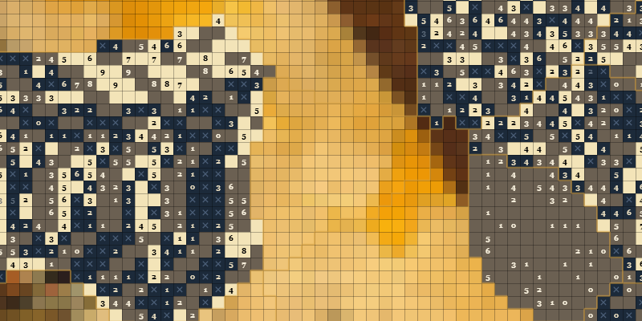

Picrossweeper
A picross × minesweeper puzzle — solve the grid, uncover the picture.
Every tile on the board is secretly either light or dark. Some tiles carry a number, and that number counts the light tiles in the 3×3 block around it — including itself.
That single rule is the whole game. Mark tiles light or dark, use each number to pin down its neighbours, and the hidden picture comes out of the grid as you go. Every puzzle is generated so that it can be solved by pure logic — there is never anything to guess.
Learn
How to play
A visual walkthrough: the rule, a worked example of every number from 0 to 9, the controls, and the two deductions that will solve any board you meet.
Read the tutorial →
Play
Single puzzle
One small board at a time, 10×10 up to 25×25, hiding a piece of pixel art. Pick a picture, pick a difficulty, take as long as you like. The best place to start.
Start a puzzle →
The big one
Giant grid
54,000 tiles over a single classic painting, cut into hundreds of irregular regions and panned and zoomed like a map. Solve a region at a time; the artwork appears behind you.
Open the giant grid →